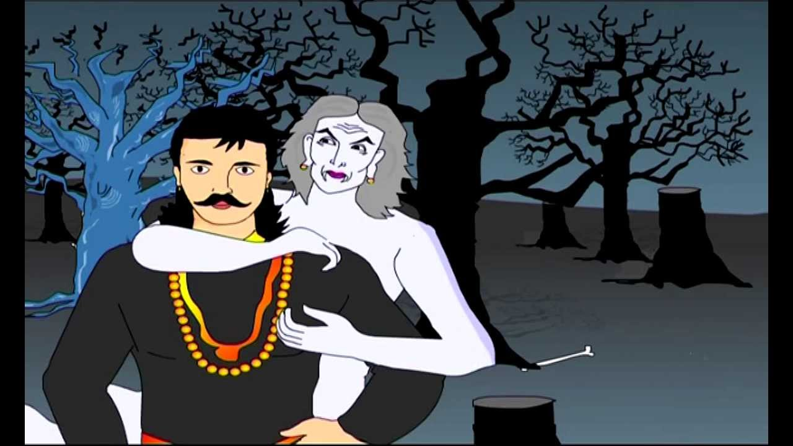

|
The Betaal ended his story and asked to Vikramaditya “King! Didn’t Kurupshana behave like a foolish? If he had no intention of marrying the princess, why did he at all decide to undergo the test?” And after having succeeded in the test and qualified to wed the princess, why did not want to marry her? “ , “If you know the answer and still decide not to satisfy me, beware, your head will be blown to pieces!” ""You are right, Kurupshana was a handicapped young man," said the Vikramaditya." He was aware of his handicap that bothered his stepmother. He really wished that she changed her opinion about him. She should not any longer feel that he was no good. Instead she should know that where people with no handicap had failed, he could, despite his handicap, come out a victor. That, for him, was the biggest reward he could aspire for. He decided to undergo the test not with the hope of marrying a princess. If he married her, he would one day be called upon to rule the kingdom. But as a ruler, he wouldn’t be able even to hold sword and could not even protect his kingdom, so it wouldn’t be wise decision for him to marry her. That’s why he gave up his claim to her hand. It was the decision of a wise person." Betaal knew that king will definitely speak out the answer so he flew back to the ancient tree carrying the corpse along with him. Vikramaditya drew his sword and went after the Betaal . |
 |